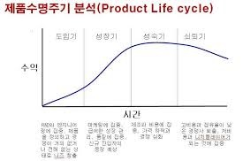
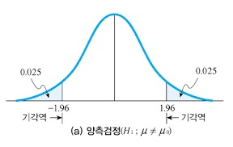

확산적사고 = 주어진 문제에 대해 가능한 많은 해결책을 창출하는 기법 수렴적사고 = 최적의 해결책을 창출하는 기법 범주화 = 속성과 관계등을 공통적인 특징에따라 분류
VOC의 4가지 고객욕구 = 제품에 대한 관련도가 높고 자신에게 중요할때 제품에대한 선호를 형성 계층적구조 = 고객의 소리는 단계적이다. 욕구의 우선순위 = 어떤 욕구는 다른 욕구보가 우선순위를 가지고 있다. 성능에 대한 고객지각 = 제품의 성능을 어떻게 지각하는지 시장조사로 알 수 있다.
품질의 집 = 고객의 욕구롸 중요고, 고객을 만족시킬 설계특성, 상관관계 등을 고려해 각 설계특성에 대한 목표치를 나타냄. 제품플랫폼 = 다양한 제품을 생산하거나 판매하기 위해 공동으로 사용되는 결과물로 구성부품과 인터페이스로 이루어짐
제품범주 창출전
시장선도자가 새로운 범주를 창출해 처음으로 시장에 진입하는 전략. 제품범주가 형성되어 있지 않아 선발자로써 처음으로 형성하고 편익을 유발한다. 분할전략
후발진입자가 시장에 이미 형성된 제품범주를 분할하여 자사의 제품을 차별화된 하위범주와 관련시켜 기존의 제품을 진부하고 열등한 범주로 관련시킨다.
테스트 시장의 유형 모의점포 = 실험싱내에 가상점포를 만들어 자사의 신제품과 경쟁ㅈ[품을 진열하거나 광고를 보여준 후 가상의 점포에서 실제로 구매하게 하는것 통제 = 실제 점포를 선정하여 그 점포에서 소비자반응을 조사. 전체계획복제는 불가능하나 표준시험보다 일반적으로 더 신속하고 더 저렴하다. 표준 = 표적시장을 대표할 수 있는 소수의 지역을 선정해 유사한 캠페인을 실시한 소비자의 반응과 판매성과를 조사
 도입기 = 많은 광고비용으로 수익이 크지 않으며 얼어답터들이 제품 사용을 한다. 성장기 = 광고비용이 도입기보다 줄어들어 이익이 상승한다. 성숙기 = 판매촉진을 위해 이벤트를 실시하며 매출이 최고조에 달한다. 점유율유지가 목적이며 모방제품들이 많다. 쇠퇴기 = 이익과 판매율이 감소하며 단계적으로 철수하는 모습을 보인다.
현 경쟁자간 경쟁강도 = 시장지위를 유리하게 하기위해 광고를하며 경쟁기업의 수가 많으며 기업들의 규모가 동등하다. 높은 재고비용과 경비가 소요된다. 신규진입자의 위협 = 공격적인 마케팅의 여파로 산업 전체가 타격을 입으며 진입장벽을 높이는 다양한 전략을 필요로한다.
제품계열의 넓이확대 (제품간에 일관성이 있을때 시너지 효과를 얻을 수 있다) 확대 = 유사한 제품계열을 추가 또는 새로운 제품계열을 추가 분할 및 통합 = 복수제품계열 소유기업의 효율적인 관리가 어려울때 제품계열의 수를 줄인다.
경영통계실습
인과조사 = 원인과 관계를 정확하기 파악하기 위한것으로 원인변수와 결과는 함께 발생한다. 변수들간의 인과관계를 규명하기위해 인위적인 상황에서 원인 변수를 조작해 결과변수의 변화를 관찰한다.
외생변수 우연적사건 = 통제 불가능 성숙효과 = 시간의 경과에 따라 나타나는 시험단위의 육체적 심리적변화 시험효과 = 실험과정에서 첫번째 측정이 두번째 특정에 영향을 주어 익숙해지기때문에 변수가 달라질 수 있다.
선수시험설계 = 통제집단의 사전사후로 실험변수를 도입하지 않은 상태 유사실험설계 = 단일집단시계열은 같은 같은 집단에게 결과에 영향을 줄 수 있는 변수를 보여준다.
표본프레임선정 = 모집단서에 포함된 조사대상 명단에 수록된 목록으로 주로 전화번호수가 있으며 비확률표본추출법으로 이용 비확률 = 무작위로 모집단을 대표하는지에 대한 측정이 어렵다. 확률 = 명단이 수록된 표본프레임이 있어서 특정 조사대상이 뽑일 확률에 대한 사전계산이 가능하다. 충화표본추출 = 구역을 나누어 한 구역만을 측정하며 다른 집단의 이질성을 측정한다. 각 집단들로부터 무작위로 표본을 추출하며 집단간의 이질성이 존재할때 무작위 추출보다 모집단의 특성을 더 잘 나타낸다. 군집표본추출 = 차이가 크지 않은 집단에서 하나를 골라 대표로 각각의 소집단들로부터 최종표본단위를 다시 무작위로 추출한다.
가설
어떤 형상에 대한 연구자의 추측을 객관적인 사실에 의해 서술하는것 종류
귀무가설 = 조사자의 주장인 대립가설과 반대되는 진술로 조사자가 부정하고 싶은 가설
대립가설 = 연구가설로 조사자가 제기하는 주장이다. 수립된 자료에 의해 사실로 입증되기를 원하는 진술

양측검증 = 맥주 한 병에 들어있는 양은 ~가 아니다
단측검증 = 맥주 한 병에 들어있는 양은 ~보다 적다 (오른쪽 단측 = 모집단의 평균이 어떠한 값보다 클 것으로 기대할때) (왼쪽단측 = 어떤 값보다 작을것을 기대할때)
군집분석 = 다수의 대상들을 그들이 공유하는 속성을 토대로 유사한 특성을 가진 대상들 끼리 하나의 집단으로 묶는데 사용되는 기법 분산분석 = 명목척도로 측정된 독립변수와 등간 또는 비율척도로 측정된 종속변수 사이의 관계 다원분산분석 = 둘 이상의 독립변수간의 과거를 검증 카이자승검증 = 집단별로 명목척도와 서열척도고 측정된 변수릐 분포에 차이가 있는지를 파악하기 위함
회귀분석 = 하나 또는 둘 이상의 변수들이 다른 하나의 변수에 미치는 영향의 정도와 방향을 파악하고 독립변수들의 변화에 따른 종속별수의 변화를 예측 요인분석 = 다수의 변수들을 유사한 성격을 가진 항목들끼리 묶어 적은수의 요인으로 축약시키는것 군집분석 = 조사대상들의 속성을 이용해 조사대상들간의 유사성 지표를 만들어 비슷한 대상들부터 순차적으로 묶음
마케팅
가격결정의 고려요인 소비자 요인 = 소비자가 지불하고자 하는 가격의 범위안에서 결정되어야한다. 가격의 변화에 따라 수요가 어떻게 달라지는지를 봐야한다. 자사 요인 = 자사의 마케팅목표와 방향, 제품의 원가 등 자사관련 요인을 고려해야 하며 목표는 생종, 이익극대화, 시장점유율 극대화등이 있다. 경쟁사요인 = 소비자들은 경쟁사와 자사제품의 가격을 비교하여 구매행동을 한다. 유통경로 요인 = 자사의 마진은 유지하고 제조업자가 공급하는 제품의 가격을 인하해 주기를 원한다. 정부규제 요인 = 정부는 경제상황 및 물가안정과 같은 이유로 해당산업의 가격을 규제한다.
비용절감을 통한 가치제공 역할전문화 = 한 제품을 대규모로 생산할 수 있는 효율적인 시설을 활용함으로써 규모의 경제를 달성할 수 있다. 유통경로에서는 소비자에게 직접 전달하는 정문성이 부족. 거래정례화 = 대금지불, 형태, 시기등이 정례화된다면 유통비용은 감소할 수 있다. 거래단순화 = 소비자가 구매하기 위해서 들러야 하는 소매상의 수를 줄임으로써 거래단순화와 효율성을 발생시킨다.
유통경로 지배구조 전통적 = 독립적 유통업자가 수행하는 경로는 독립적 유통경로로 독자적인 이익을 극대화하기 떄문에 비용이 적게 들지만 통제가능성 또한 낮다. 기업형 VMS = 유통경로 구성원이 다른 경로구성원들을 소유하고 지배하는 경우 계약형 VMS = 소매상에 자발적으로 자신들만의 도매상을 소유하고 공동으로 운영하는것 관리형 = 경로상에서 파워를 지닌 유통경로 선도자로 활동을 통제하고 조정한다.
유통경로의 혁신배경 = 고객욕구의 변화로 건강 및 친환경, 기업의 사회적 책임 등에 대한 수요가 증가하고 있다. 경쟁형태의 변화로 자신이 속한 기업만이 아니라 상이한 업태의 기업전략을 분석하고 대응하는 것이 중요. 혁신방향 = 고급형매장과 초저가 매장의 등장으로 소비자들의 트렌드를 반영한 건강과 친환경적인 매장이 필요하다.